Experiencie rogue one //
Visit the official rogue one movie site
Visit the official Rogue One: A Star Wars Story movie site for tickets, trailers, and more Rebel intel!
Rogue one: Recon - A star wars 360 experience
Rogue one: recon is a short immersive 360 experience created by ILMxLAB that is connected to "Rogue One: A
Rogue one helmet creator
Calling all rebel pilots: Design your own fighter pilot helmet... and save the Rebellion!
Video //
"K-2so featurette: rogue one: a star wars story
Get a behind-the-scenes look at K-2SO from Rogue One: A Star Wars Story in this featurette with Alan Tudyk
"Scoring highights" featurette: rogue one: a star wars story
Settle the score with these musical highlights from Rogue One.
"Scoring highights" featurette: rogue one: a star wars story
Settle the score with these musical highlights from Rogue One.

"Scoring highights" featurette: rogue one: a star wars story
Settle the score with these musical highlights from Rogue One.
"Scoring highights" featurette: rogue one: a star wars story
Settle the score with these musical highlights from Rogue One.
Characters //
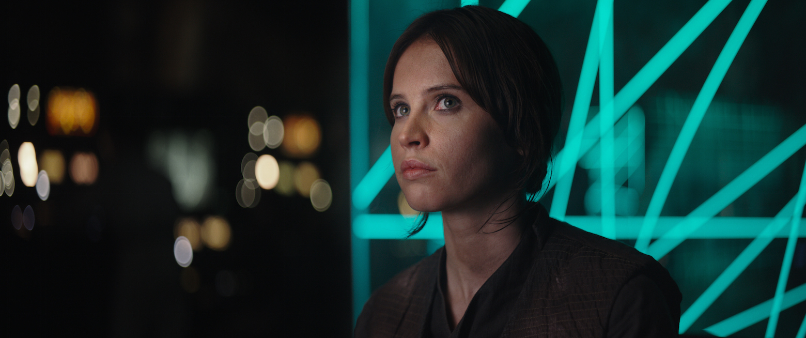
Jyn erso
Putting behind a checkered past by lending her skills to a greater cause. Jyn Erso is impetuous, defiant, and eager to bring the battle to the Empire. Used to
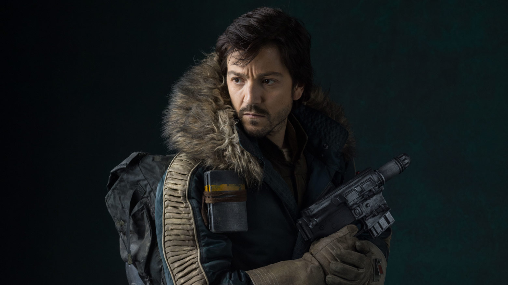
Captain cassian andor
An accomplished Alliance Intelligencie officer with combat field experiencie. Captain Cassian Andor commands from big his Rebel troops with his
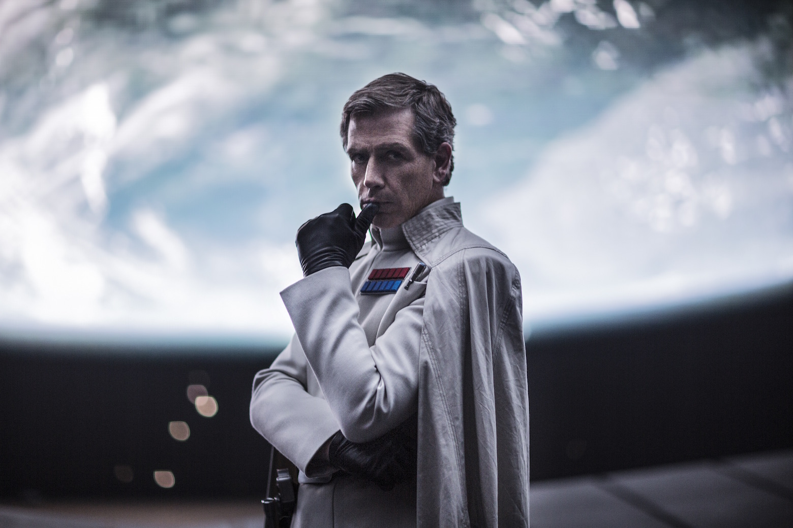
Director orson krennic
As director of a Advance Weapons Research for the Imperial military. Orson Krennic is obsessed with the completion of the long-delayed Death Star project. A
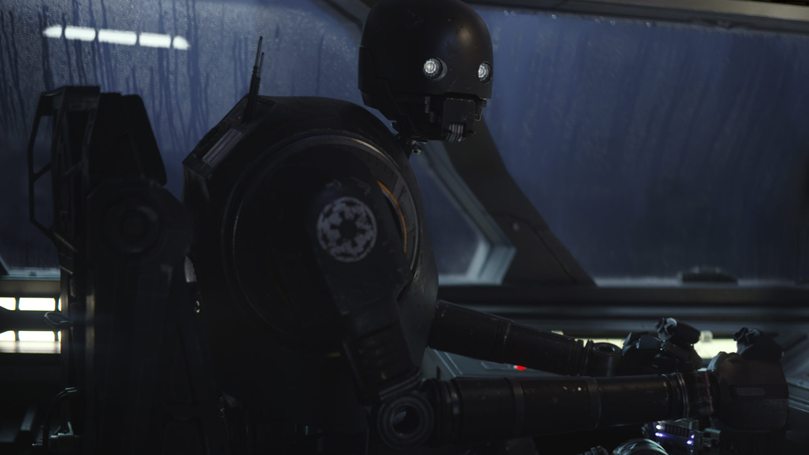
K-S2O (Kay-tuesso)
A reprogrammed Imperial security droid now loyal to the Alliance. K-S2O is an alarming sight standing within a secret Rebel base. The programatic droid is an
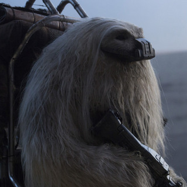
Moroff
Moroff seeks out combat zones in the galaxy to sell his brawn and firepower to anyone who might need it. Not interested in the details of the Empire versus rebels
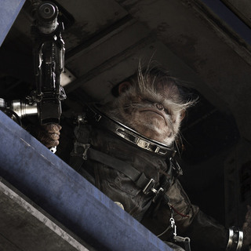
Bistan
The efforts of the Rebellion have drawn warriors from across the galaxy, fighting to liberate their homes and free their people from the opression of the Empire
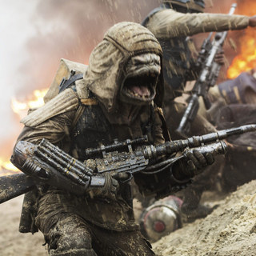
Pao
An amphnious Drabata, the fierce commando. Pao charges into battle with the Empire while shouting a full-trhoated battle cry of "Sa'kalla! as his custom
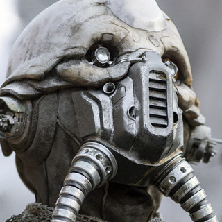
edrio two tubes
Edrio Two Tubes is a mercenary pilot who flies alongside his eggmate. Benthic. They share the nickname derived from the beathing apparatus that allow Togpath
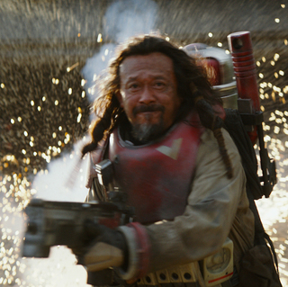
Baze malbus
The harsh reality of his Imperial-occupied home world has hardened Baze Malbus into a pragmatic soldier and a crack shot with his heavy repeater cannon. Baze has
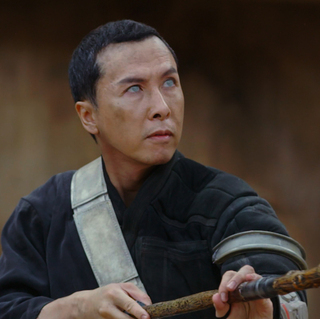
Chirrut ïmwe
Deeply spiritual. Chirrut Ïmwe believes all living things are connected through the Force. His sightless eyes do not prevent him from being a highly skilled warrior
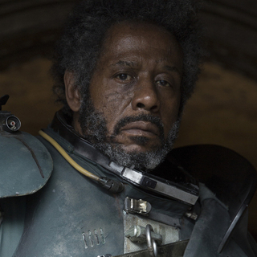
Saw gerrera
A battlered veteran of the Clone Wars as well as the ongoing rebellion against the Empire. Saw Gerrera leads a band of Rebel extremists. Saw has lost much in
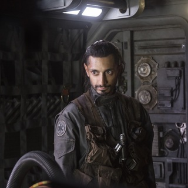
Bodhi rook
A former Imperial pilot. Bodhi has strong piloting and technical skills that he will put to use for the Rebellion. Ever practical but highly anxious. Bodhi must
Image Gallery //
Rogue one: A star wars story gallery
Rogue One: A Star Wars Story is in theaters now!
Vehicles //
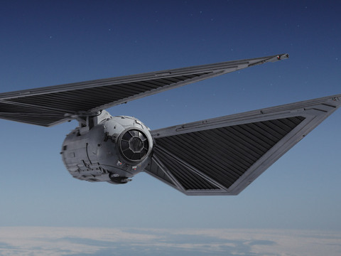
Tie Striker
A streamlined variant of the classic TIE fighter design, the TIE striker is designed for amtospheric patrols over important Imperial ground-based installations.
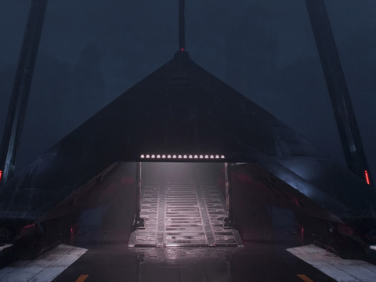
Krennic's imperial shuttle
With its starkly geometric hull shape and bat-like wings, the approach of Delta-class T-3c shuttle is an imposing sight. Once it lands and deploys its passengers - the cruel
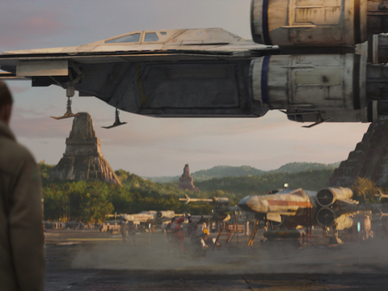
u-wing
A sturdy troop transport and gunship used by the Rebel Alliance, the U-wing startfighter is a well-armed swing-wing vessel that must penetrate heavy fire zones to
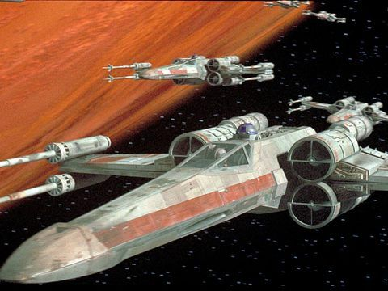
x-wing starfighter
The X-wing is a versatile Rebel Alliance startfighter that balances speed with firepower. Armed with four laser cannons and two proton torpedo launchers, the X-wing can
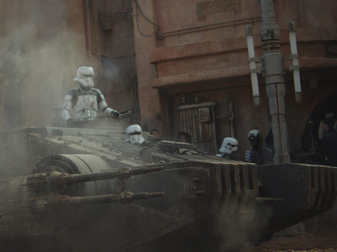
combat assault tank
The Imperial combat assault tank has great maneuverability in tight quarters, such as the streets of occupied cities. Its lasers cannons can devastate enemy
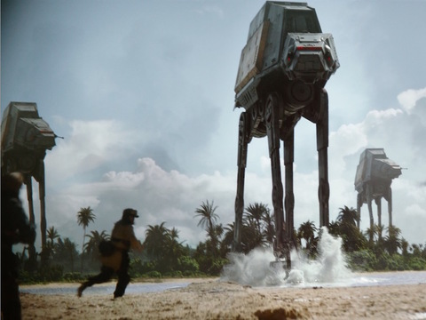
At-act walker
A larger version of the standard combat AT-ACT walker features a dedicated cargo bed for the transportation of heavy building materials or combat
Locations //
Jedha
A small desert moon frosted by a permanent winter. Jedha is home to one of the first civilizations to explore the nature of the Force. At one time a world important to
Scarif
The planet Scarif would be a beautiful tropical paradise if not for the presence of a major Imperial military installation, Scarif is the principal construction facility for
News and blog //
"News novels rebel rising and guardians of the whills will explore rogue one backstories
Shoretrooper shortbread
Make an Imperial snack that even rebel spies would love.